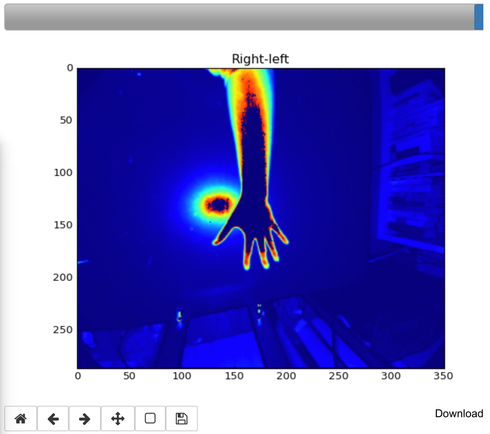

Work Projects
Here is a selection of projects I lead, work on, or contribute to in my postition at LLNL.

Remote Sensor Design for Automated Visual Recognition
I am PI for this project at LLNL. Presentation from LLNL Data Science Institute (DSI) Workshop, August 2018. Link to paper will be posted shortly on arxiv.org.

Deep Fine-grained Recognition from Surveillance Imagery
I worked on this project with PI Wesam Sakla. Presentation from LLNL CASIS Workshop, July 2017

Livermore Big Artificial Neural Network Toolkit (LBANN)
I am a minor contributor to this project. I am currently working on implementing the Single Shot Multibox Detector model in LBANN.
Class Projects

Hand Action Recognition in G-D Video Data

Super-Resolution to Improve Classification Accuracy of Low-Resolution Images

Tetris in xv6
Personal Projects

Predictomato
Predicting RottenTomatoes score using only video trailers with convolutional neural networks.

Goldberg Polyhedra
Some code for rendering Goldberg polyhedra.